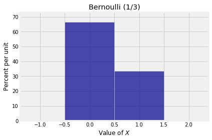

---
redirect_from:
  - "/chapter-06/00-random-counts"
interact_link: content/Chapter_06/00_Random_Counts.ipynb
kernel_name: python3
kernel_path: content/Chapter_06
has_widgets: false
title: |-
  Random Counts
pagenum: 30
prev_page:
  url: /Chapter_05/05_Review_Problems_Set_1.html
next_page:
  url: /Chapter_06/01_Binomial_Distribution.html
suffix: .ipynb
search: random trials x success count n distribution xi successes independent bernoulli p trial probability example simple indicator counts fixed elements failure parameters start only consider variable same le let sum s xis rolls form class variables fundamental importance theory seen examples already matches points permutation good sample general setting among depends underlying assumptions randomness chapter study identically distributed neither matching problem nor sampling fits framework however both settings closely approximated under conditions finally discover remarkable properties itself data science includes powerful methods based randomizing lets off simplest either indicators result thus zero valued where very called here histogram counting adding

comment: "***PROGRAMMATICALLY GENERATED, DO NOT EDIT. SEE ORIGINAL FILES IN /content***"
---

    <main class="jupyter-page">
    <div id="page-info"><div id="page-title">Random Counts</div>
</div>
    <div class="jb_cell">

<div class="cell border-box-sizing text_cell rendered"><div class="inner_cell">
<div class="text_cell_render border-box-sizing rendered_html">
<h1 id="Random-Counts">Random Counts<a class="anchor-link" href="#Random-Counts"> </a></h1>
</div>
</div>
</div>
</div>

<div class="jb_cell">

<div class="cell border-box-sizing text_cell rendered"><div class="inner_cell">
<div class="text_cell_render border-box-sizing rendered_html">
<p>These form a class of random variables that are of fundamental importance in probability theory. You have seen some examples already: the number of matches (fixed points) in a random permutation of $n$ elements is an example of a "random count", as is the number of good elements in a simple random sample.</p>
<p>The general setting is that there are a number of trials, each of which can be a success or a failure. The random count is the number of successes among all the trials.</p>
<p>The distribution of the number of successes depends on the underlying assumptions of randomness. In this chapter we will study independent, identically distributed trials. Neither the matching problem nor simple random sampling fits this framework. However, we will see that both of these settings can be closely approximated by independent trials under some conditions on the parameters.</p>
<p>Finally, we will discover some remarkable properties of random counts when the number of trials is itself random. Data science includes many powerful methods that are based on randomizing parameters.</p>
<p>Let's start off with the simplest random count, that is a count that can only be either 0 or 1.</p>

</div>
</div>
</div>
</div>

<div class="jb_cell">

<div class="cell border-box-sizing text_cell rendered"><div class="inner_cell">
<div class="text_cell_render border-box-sizing rendered_html">
<h3 id="Indicators-and-the-Bernoulli-$(p)$-Distribution">Indicators and the Bernoulli $(p)$ Distribution<a class="anchor-link" href="#Indicators-and-the-Bernoulli-$(p)$-Distribution"> </a></h3><p>Consider a trial that can only result in one success or one failure. The number of successes $X$ is thus a zero-one valued random variable and is said to have the <em>Bernoulli $(p)$ distribution</em> where $p = P(X = 1)$ is the probability of success.</p>
<p>This very simple random count $X$ is called the <em>indicator of success</em> on the trial.</p>
<p>Here is the probability histogram of a random variable $X$ that has the Bernoulli $(1/3)$ distribution.</p>

</div>
</div>
</div>
</div>

<div class="jb_cell">

<div class="cell border-box-sizing code_cell rendered">
<div class="input">

<div class="inner_cell">
    <div class="input_area">
<div class=" highlight hl-ipython3"><pre><span></span><span class="n">bern_1_3</span> <span class="o">=</span> <span class="n">Table</span><span class="p">()</span><span class="o">.</span><span class="n">values</span><span class="p">([</span><span class="mi">0</span><span class="p">,</span><span class="mi">1</span><span class="p">])</span><span class="o">.</span><span class="n">probabilities</span><span class="p">([</span><span class="mi">2</span><span class="o">/</span><span class="mi">3</span><span class="p">,</span> <span class="mi">1</span><span class="o">/</span><span class="mi">3</span><span class="p">])</span>
<span class="n">Plot</span><span class="p">(</span><span class="n">bern_1_3</span><span class="p">)</span>
<span class="n">plt</span><span class="o">.</span><span class="n">xlabel</span><span class="p">(</span><span class="s1">&#39;Value of $X$&#39;</span><span class="p">)</span>
<span class="n">plt</span><span class="o">.</span><span class="n">title</span><span class="p">(</span><span class="s1">&#39;Bernoulli (1/3)&#39;</span><span class="p">);</span>
</pre></div>

    </div>
</div>
</div>

<div class="output_wrapper">
<div class="output">

<div class="jb_output_wrapper }}">
<div class="output_area">


<div class="output_png output_subarea ">

</div>

</div>
</div>
</div>
</div>

</div>
</div>

<div class="jb_cell">

<div class="cell border-box-sizing text_cell rendered"><div class="inner_cell">
<div class="text_cell_render border-box-sizing rendered_html">
<h3 id="Counting-is-the-Same-as-Adding-Zeros-and-Ones">Counting is the Same as Adding Zeros and Ones<a class="anchor-link" href="#Counting-is-the-Same-as-Adding-Zeros-and-Ones"> </a></h3><p>Consider a sequence of $n$ trials and for $1 \le i \le n$ let $X_i$ be the indicator of success on Trial $i$.</p>
<p>The sum $S_n = X_1 + X_2 + \cdots + X_n$ is then the total number of successes in the $n$ trials. For example, if $n=3$ and $X_1 = 0$, $X_2 = 0$, and $X_3 = 1$, then there is one success in the three trials and $S_3 = 1$. As you increase the number of trials, the count stays level at every $i$ for which $X_i = 0$, and increases by 1 at each $i$ for which $X_i = 1$.</p>
<p>We will start out by assuming that all the $X_i$'s are i.i.d. That is, trials are mutually independent and the chance of success in a fixed trial is the same for all trials.</p>
<p>To fix such an example in your mind, think of the trials as being 7 rolls of a die, and let $X_i$ be the indicator of getting a six on roll $i$. Each $X_i$ has the Bernoulli $(1/6)$ distribution and all the $X_i$'s are independent. Their sum $S_7$ is the number of sixes in the 7 rolls.</p>

</div>
</div>
</div>
</div>

 


    </main>
    